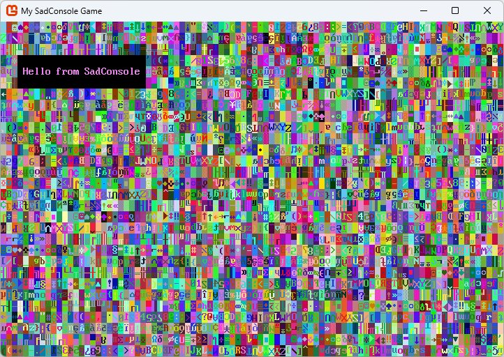
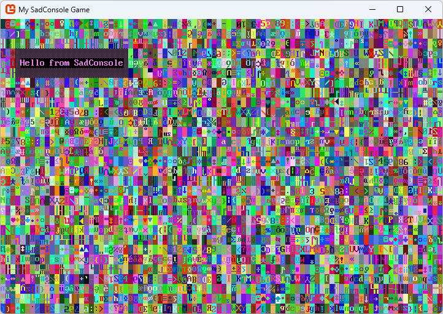
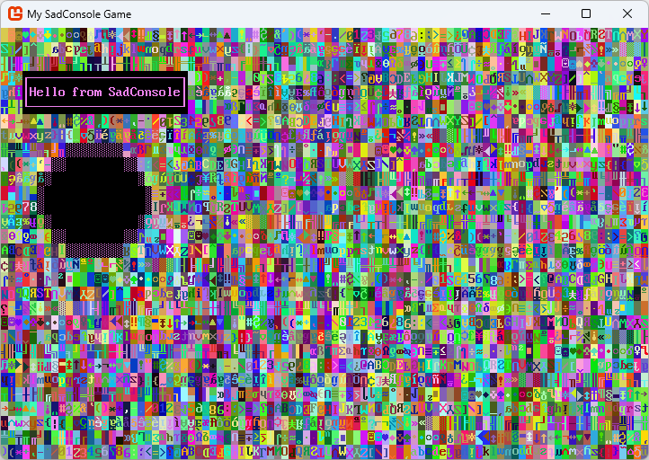
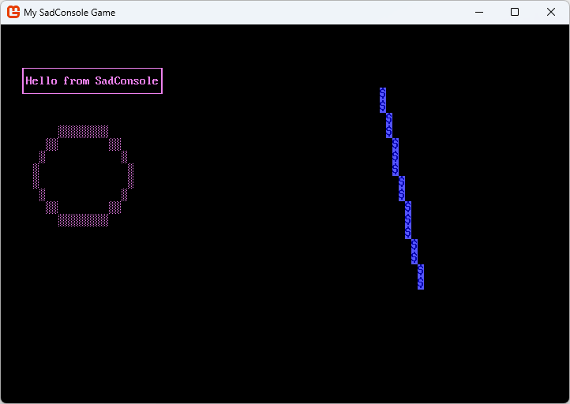

Get Started 1 - Draw on a console
Welcome to the start of the Getting Started with SadConsole tutorial series. This series will outline how to use the basic parts of SadConsole from the perspective of a new developer.
Prerequisites
To start this tutorial you'll need to have created a SadConsole project. It is recommended that you use the Create a new SadConsole .NET project with the SadConsole templates which works for Windows, Linux, and macOS.
Warning
Because of the added complexity, I don't recommend that you create a MonoGame project using the MonoGame Visual Studio templates.
Sync your code to mine
The previous section leads you to material that helps you create a SadConsole project. If you used the CLI templates or created a project in Visual Studio following the directions in the article, you'll have to change some things for this tutorial series.
Update the project file. Open your project file, it may be named MyGame.csproj. Replace the content with the following snippet:
Important
If you're using a different
<TargetFramework>such as .NET 7, feel free to update the value.<Project Sdk="Microsoft.NET.Sdk"> <PropertyGroup> <OutputType>WinExe</OutputType> <RootNamespace>SadConsoleGame</RootNamespace> <TargetFramework>net6.0</TargetFramework> <ImplicitUsings>enable</ImplicitUsings> <Nullable>enable</Nullable> </PropertyGroup> <ItemGroup> <Using Include="SadConsole" /> <Using Include="SadRogue.Primitives" /> <Using Include="SadConsole.Console" Alias="Console" /> </ItemGroup> <ItemGroup> <PackageReference Include="MonoGame.Framework.DesktopGL" Version="3.8.1.303" /> <PackageReference Include="SadConsole.Host.MonoGame" Version="10.0.3" /> </ItemGroup> </Project>Notice the
<Using>elements. These may be new to you if you're already familiar with C#. These statements automatically import the associated namespace to every code file in your project. This means that you can omit lines likeusing SadConsole;in all of your code files.Delete the RootScreen.cs file if it was generated by the templates.
Open Program.cs and replace the code with the following:
using SadConsole.Configuration; Settings.WindowTitle = "My SadConsole Game"; Game.Create(90, 30, Startup); Game.Instance.Run(); Game.Instance.Dispose(); static void Startup(object? sender, GameHost host) { Game.Instance.StartingConsole!.FillWithRandomGarbage(SadConsole.Game.Instance.StartingConsole!.Font); Game.Instance.StartingConsole.Fill(new Rectangle(3, 3, 23, 3), Color.Violet, Color.Black, 0, Mirror.None); Game.Instance.StartingConsole.Print(4, 4, "Hello from SadConsole"); }
You should be able to run this code and see the following output. You can run your program by pressing the F5 key. If you're using the terminal, run dotnet run:

Exploring the sample code
The static void Startup(object? sender, GameHost host) method is used as an event handler by SadConsole. When the game starts, this method will be called and any code you provide in it is executed. For now, this method provides a simple place to easily explore and play with SadConsole without creating any real game code.
The Startup method is declared as static which means that you don't have to create an instance of a type to access this method. This method was provided to SadConsole in the code at the start of the program. This is a hook where you can provide some extra initialization code for your game, such as creating all the startup variables and objects.
Let's explore the Startup method:
static void Startup(object? sender, GameHost host)
{
Game.Instance.StartingConsole!.FillWithRandomGarbage(SadConsole.Game.Instance.StartingConsole!.Font);
Game.Instance.StartingConsole.Fill(new Rectangle(3, 3, 23, 3), Color.Violet, Color.Black, 0, Mirror.None);
Game.Instance.StartingConsole.Print(4, 4, "Hello from SadConsole");
}
This code is accessing the default starting console. You provided the size of the starting console when you created the SadConsole game. The first code line fills the console with some garbage, that is, random characters and colors.
Game.Instance.StartingConsole!.FillWithRandomGarbage(SadConsole.Game.Instance.StartingConsole!.Font);Did you notice the
!in that line of code? BecauseStartingConsolecan be null, we need to tell C# that we understand this and we're absolutely sure that it isn't null, which is what the!(null-forgiving) operator does in this case. This isn't required, but if your code editor was warning you thatStartingConsolemight be null, this disables that warning.The next line fills a rectangle region with some color to create a box.
Game.Instance.StartingConsole.Fill(new Rectangle(3, 3, 23, 3), Color.Violet, Color.Black, 0, Mirror.None);The parameters are as follows:
- Region to fill: Position X, Position Y, Width, Height:
new Rectangle(3, 3, 23, 3) - The foreground color to use for each character in the region:
Color.Violet - The background color to use for each character in the region:
Color.Black - The glyph character to fill,
0represents an empty character. - The mirror setting for the glyph. You can mirror them horizontally or vertically. Because the
FillWithRandomGarbagerandomizes the mirror, this needs to be cleared for our area.
- Region to fill: Position X, Position Y, Width, Height:
The last line prints some text as position 4, 4. This position is inside the box. Because the
Printstatement here isn't specifying any color settings, the text will have the same foreground and background as cells in the surface it replaces. These were set by theFillmethod, which had a foreground of Violet and a background of Black.Game.Instance.StartingConsole.Print(4, 4, "Hello from SadConsole");
Play around with these methods. Try filling in some other boxes, changing the colors, and printing different strings to different areas. You can remove the FillWithRandomGarbage line if you would like while playing around.
More drawing
Let's add some more code to the Startup method to draw more things to the screen. However, simplify the access to Game.Instance.StartingConsole by assigning it to a variable named startingConsole, this will make it easier to write code that interacts with it. You can copy/paste this code over your existing code so that you're in sync with the article:
static void Startup(object? sender, GameHost host)
{
Console startingConsole = Game.Instance.StartingConsole!;
startingConsole.FillWithRandomGarbage(startingConsole.Font);
startingConsole.Fill(new Rectangle(3, 3, 23, 3), Color.Violet, Color.Black, 0, Mirror.None);
startingConsole.Print(4, 4, "Hello from SadConsole");
}
Shapes
Previously we used Fill to fill in a rectangular region. With SadConsole you can draw shapes such as a rectangle or an ellipsis. This works like Fill but gives you more control over the drawing. For example, you can apply a border to the box you draw, with Fill, you cannot do that.
Box
After the Print line that prints "Hello from SadConsole", add the following to draw a box around it:
startingConsole.DrawBox(new Rectangle(3, 3, 23, 3), ShapeParameters.CreateBorder(new ColoredGlyph(Color.Violet, Color.Black, 176)));

The DrawBox method takes a region and a ShapeParameters object. The ShapeParameters object defines the style in which to create a shape, and in this case, the box. We're using it in a simple mode, which is just providing a ColoredGlyph for the border. A ColoredGlyph type represents a foreground color, a background color, a glyph character, all in a single type. This glyph is what gets drawn as the border of the box. A ColoredGlyph is also used to specify the fill of the shape, but we're going to omit that for now.
The DrawBox method breaks down into the following parameters:
- Rectangle: This is the region to draw box in.
- Shape Parameters: The style of border and fill settings that are applied to the box.
With DrawBox you can also specify that you want to use a line style for the box instead of the glyph character provided.
startingConsole.DrawBox(new Rectangle(3, 3, 23, 3), ShapeParameters.CreateStyledBox(ICellSurface.ConnectedLineThin,
new ColoredGlyph(Color.Violet, Color.Black)));

ShapeParameters describes many ways to create the box. While the ShapeParameters.CreateBorder method used a ColoredGlyph to set the foreground, background, and symbol used to draw the whole border, ShapeParameters.CreateStyledBox instead uses a connected line style for the symbols used to draw the box. A ColoredGlyph is still used to set the foreground and background of the border. There are a few line styles, and you can create your own, but we'll name two of the most likely used styles:
ICellSurface.ConnectedLineThin: A thin single line.ICellSurface.ConnectedLineThick: A thick double line.
Try the Thick line style to see how it looks.
Circle
Next, let's draw a circle, it follows roughly the same pattern:
startingConsole.DrawCircle(new Rectangle(5, 8, 16, 8), ShapeParameters.CreateFilled(new ColoredGlyph(Color.Violet, Color.Black, 176),
new ColoredGlyph(Color.White, Color.Black)));
The code above is using a black background to fill the box.
Run your game and you'll see the following screen:

Line
The line shape is probably the simplest. There is no fill to worry about, you simply set the starting point of the line, the ending point, and then what glyph and colors to use when drawing the line.
However, before we drawn a line, let's remove the FillWithRandomGarbage code line. All this visual noise makes it hard to see something as small as a line. After removing that code line, add the following line to the end of your code:
startingConsole.DrawLine(new Point(60, 5), new Point(66, 20), '$', Color.AnsiBlue, Color.AnsiBlueBright, Mirror.None);
Your Startup method should look like the following:
static void Startup(object? sender, GameHost host)
{
Console startingConsole = Game.Instance.StartingConsole!;
startingConsole.Fill(new Rectangle(3, 3, 23, 3), Color.Violet, Color.Black, 0, Mirror.None);
startingConsole.Print(4, 4, "Hello from SadConsole");
startingConsole.DrawBox(new Rectangle(3, 3, 23, 3), ShapeParameters.CreateStyledBox(ICellSurface.ConnectedLineThin,
new ColoredGlyph(Color.Violet, Color.Black)));
startingConsole.DrawCircle(new Rectangle(5, 8, 16, 8), ShapeParameters.CreateFilled(new ColoredGlyph(Color.Violet, Color.Black, 176),
new ColoredGlyph(Color.White, Color.Black)));
startingConsole.DrawLine(new Point(60, 5), new Point(66, 20), '$', Color.AnsiBlue, Color.AnsiBlueBright, Mirror.None);
}
Run your game and you'll see the following screen:

Other basics
There are a few other methods you can use to change a console. We learned that the Print method works at a specific position and prints a string with a foreground and background color, but you can also work with individual cells. You can adjust the foreground color, the background color, the glyph, or the glyph mirror of any cell in the console, by referring to its X,Y coordinate.
Set the foreground color of a cell. A glyph is displayed in the color of the foreground of the cell. So, by changing the foreground color, you change the color of the glyph. If the glyph is set to
0, it's blank and you won't see any character symbol nor the foreground color for that cell. In our example, this alters the S in SadConsole.// X, Y, Color startingConsole.SetForeground(15, 4, Color.DarkGreen);Set the background of a cell. This fills the cell with a specific color, while the glyph is drawn on top of the color. In our example, this alters the C in SadConsole.
// X, Y, Color startingConsole.SetBackground(18, 4, Color.DarkCyan);Set the glyph of a cell. This changes the character displayed in the cell. The glyph is based on the character index in the font file. In our example, this alters the H in Hello.
// X, Y, Glyph index or character startingConsole.SetGlyph(4, 4, '@'); // use '@' or 1, they're the same index glyphChange the mirror of a cell. Each cell is initially set to
Nonewhich represents un-mirrored. You can set the mirror toNone,Horizontal, orVertical. In our example, this alters the f in from.// X, Y, Mirror set console.startingConsole.SetMirror(10, 4, Mirror.Vertical);
Conclusion
You've now explored some of the basics of SadConsole. The Game.Instance.StartingConsole is a console you can use to quickly prototype and experiment. Keep experimenting with these methods. The next part of this series will explore the Console cursor and the screen layout system built into SadConsole.